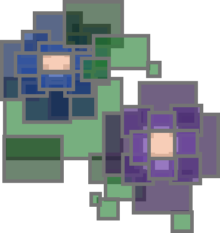
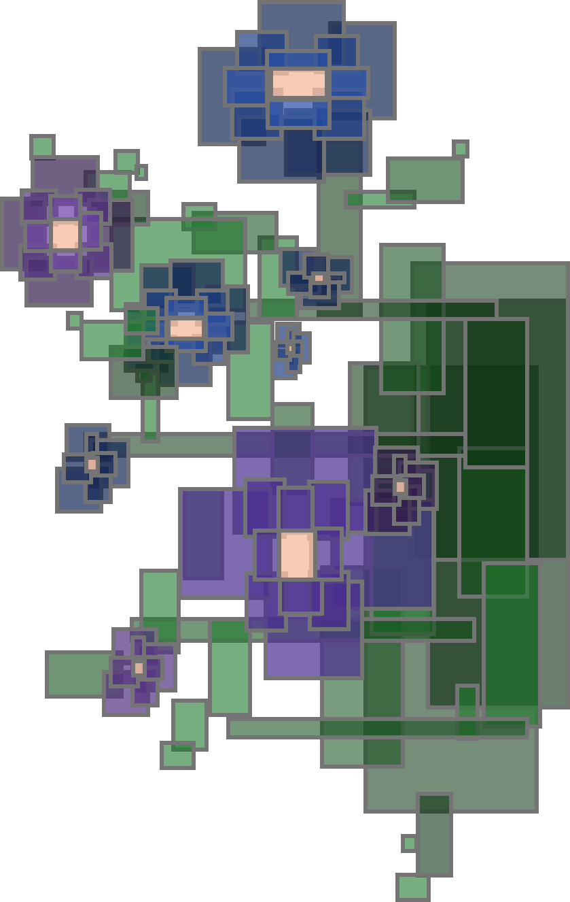
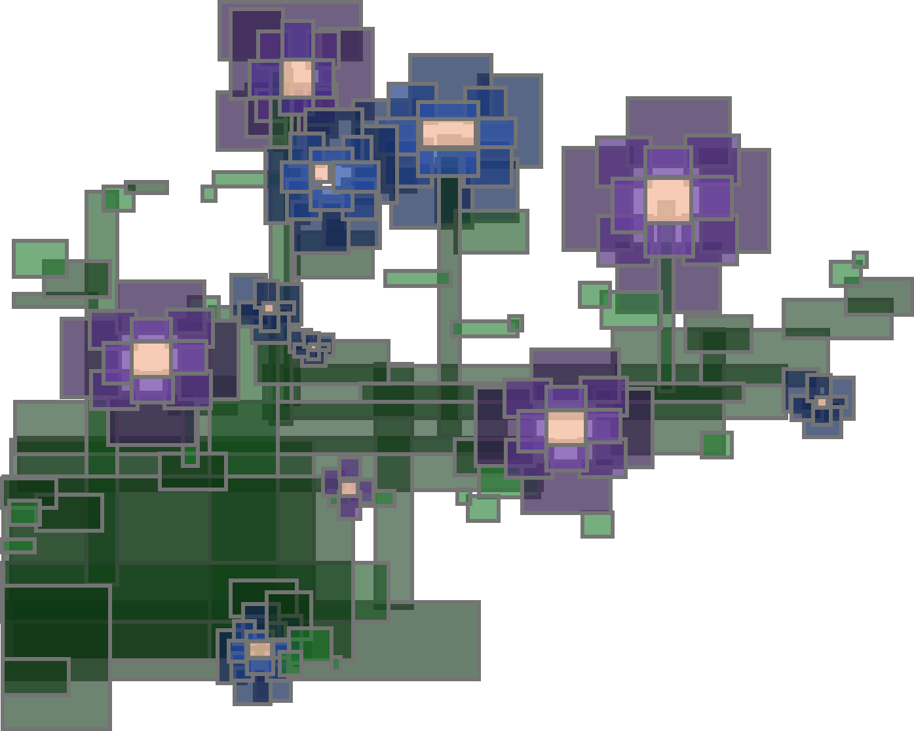
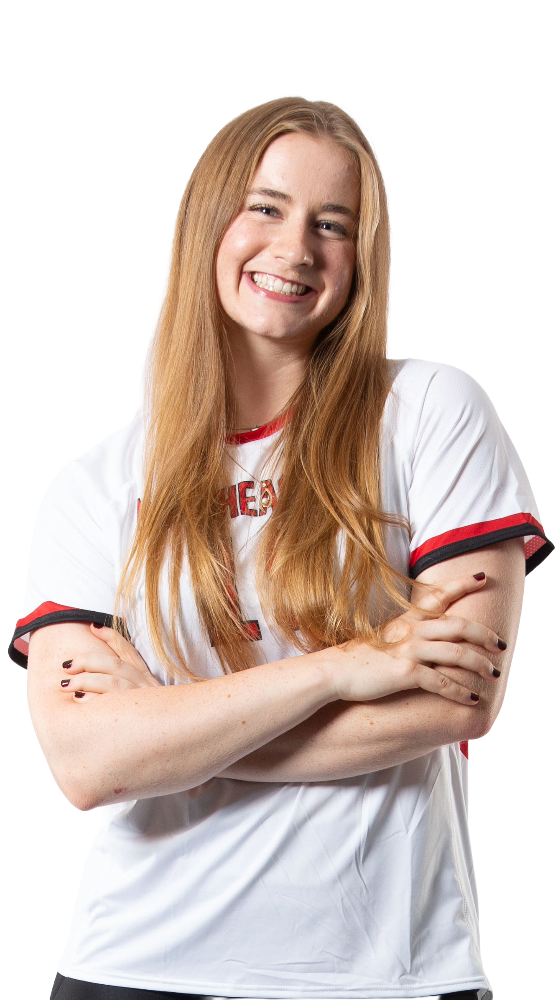
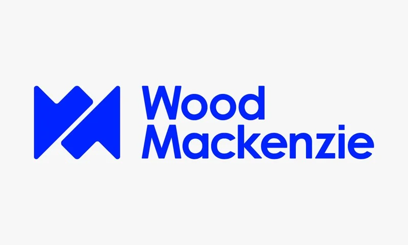

Danielle (Ellie) Williams
Chemical Engineering + Computer Science Student
Energy | Software | Data Engineering | Creative Technology
Welcome to my personal portfolio! Explore my variety of experience and projects below.
About me
My name is Danielle Williams, but I really only ever go by Ellie. I am currently pursuing a combined Chemical Engineering and Computer Science Bachelor's Degrees along with minors in Civil Engineering and Creative Coding from Northeastern University (Expected Graduation Date: May, 2027). One of the privileges of attending Northeastern University is access to an immersive experiential "Co-Op" program which allows students to gain positional experience working full time for a semester. I have worked in two impactful roles so far, one in 2024 and another in 2025.

at
heart
volleyball for nine years
travel
really into yoga
Professional Experience

Power & Renewables Co-Op
January 2025 - June 2025
A six month, full-time data science Co-Op at Wood Mackenzie.
Learn MoreEnvironmental Compliance Co-Op
January 2024 - June 2024
A six month, full-time environmental engineering Co-Op at UniFirst Corporation.
Learn MoreAcademic and Personal Projects
Engineering
From concept to creation, my engineering projects focus on developing solutions that matter. Whether it’s designing innovative mechanical systems, optimizing structural integrity, or integrating smart technology, each project showcases a dedication to problem-solving, efficiency, and forward-thinking design.
Learn More
Computer Science
My computer science projects showcase the power of logic, creativity, and problem-solving. Whether it’s machine learning models, web applications, or optimized algorithms, my work focuses on pushing the boundaries of what technology can achieve.
Learn More
Art
Ranging from intricate digital designs to traditional media, my art projects each telling a story through composition, color, and technique. Explore my gallery to see how creativity takes shape in unique and unexpected ways.
Learn More
Volleyball
Being a collegiate student-athlete is not without its challenges. Like many things, there are good days and bad days. I had to learn to separate myself as a competitor and myself as a person, student, and friend. I couldn’t let a bad practice in the morning affect me once I stepped outside the gym; I had to roll my shoulders back and go take an exam within the next hour. I couldn’t let a travel weekend affect me past that last point; win or lose I had to sit on that bus, put my headphones on, and catch up on the lectures I missed.
Being involved in two intensive, time-consuming obligations trained me to balance anything thrown my way. Nothing has taught me more about myself than my time on Northeastern's volleyball team. Flexibility, assertiveness, effective communication, empathy, time management, self-awareness, and resilience: I will take these life skills with me when I leave college and continue to adapt and grow with life's challenges and successes.
- Member of Northeastern’s Varsity volleyball team (2021–Present)
- Dedicate over 35 hours per week for practice, lift, film, travel, competition, and more
- Nominated and voted to act as lead captain (2023–Present)
- Serve as a representative on the Student-Athlete Advisory Committee (2023–Present)
- Female Red & Black Dedication Award Recipient (2025)
Contact Me!
Want to connect or ask about my work? Please don't hesitate to reach out via:
Email: williams.dani@northeastern.edu
LinkedIn: Ellie's LinkedIn
GitHub: Ellie's GitHub Profile